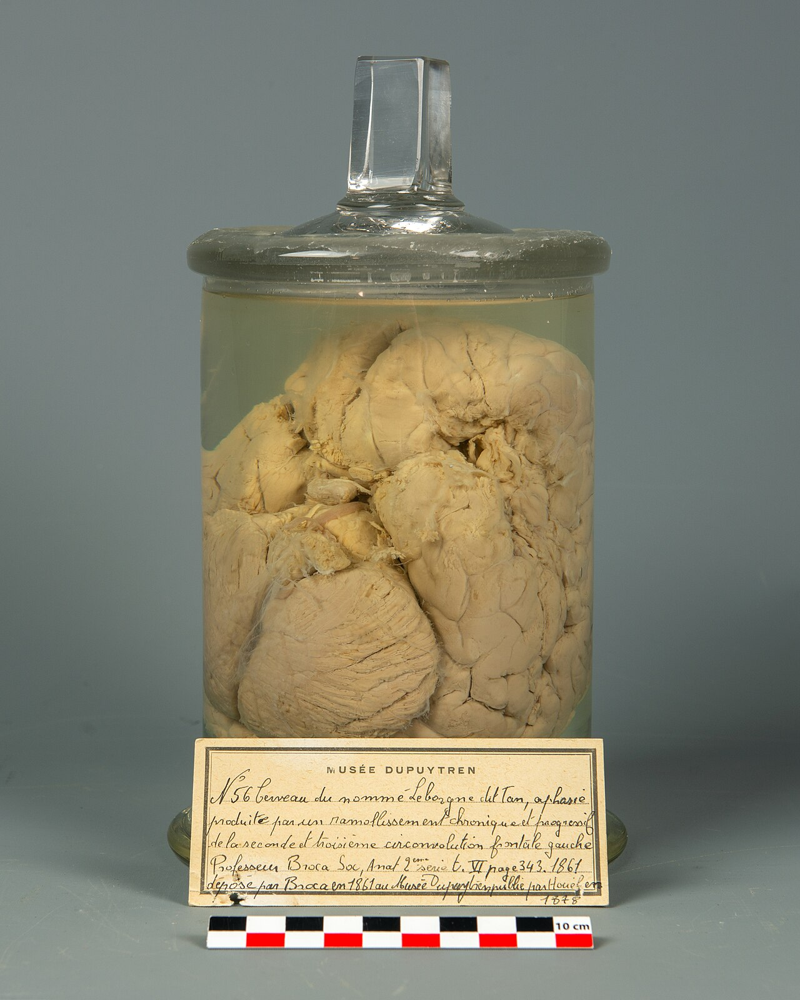
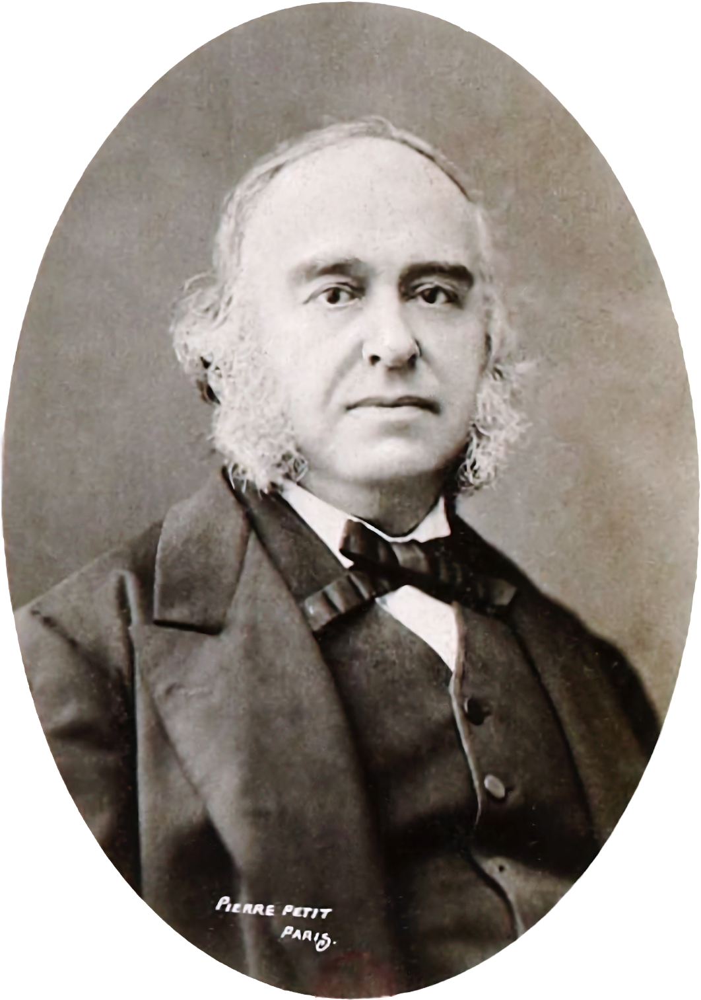
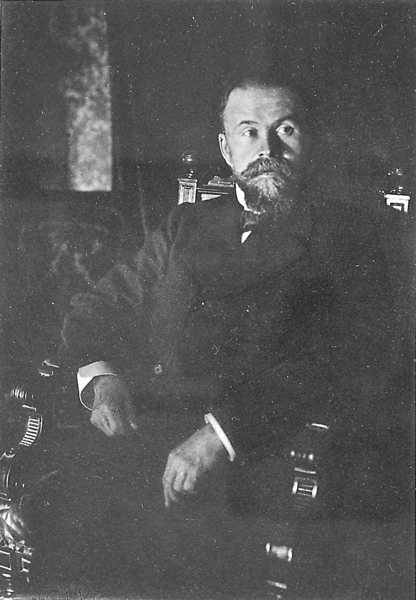

人脑的高级功能
本期导读
言语区 · 学习与记忆 · 情绪

视频原话 · 导读3 句
- 同学们好！这节课梳理人教版选择性必修一第二章第五节——人脑的高级功能。7.7s
- 照片里是1861年布罗卡研究过的一位病人的大脑：他能听懂别人说话，却几乎说不出话。这一节常考言语区、学习与记忆和情绪。12.8s
- 我们按六个考点梳理，每个考点都讲清楚怎么考、怎么做。5.5s
语言功能与言语区01#
W区 · 书写
受损：不能写字
V区 · 阅读
受损：看不懂文字
S区 · 说话
受损：不能讲话
H区 · 听
受损：听不懂话


记忆
W write 写
V vision 看
S speak 说
H hear 听
V vision 看
S speak 说
H hear 听
视频原话4 句
- 考点一，语言功能。语言功能是人脑特有的高级功能，大脑皮层有四个言语区。8.2s
- W区与书写有关，受损后不能写字；V区与阅读有关，受损后看不懂文字。8.1s
- S区与说话有关，受损后不能讲话，这是布罗卡发现的区域；{H区|brown}与听有关，受损后{听不懂话|brown}，这是韦尼克发现的区域。11.4s
- 记忆方法：用英文首字母记——W是write，写；V是vision，看；S是speak，说；{H是hear，听|brown}。10.0s
左右半球的功能侧重02#
左半球
主导语言功能（大多数人）
逻辑思维
胼胝体
联系
联系
右半球
形象思维
音乐、绘画、空间识别
音乐、绘画、空间识别
考法
左半球受损 → 失语：大多数人的言语区在左半球；右半球受损更多影响空间识别等形象思维
视频原话4 句
- 考点二，大脑左右半球的功能侧重。大多数人主导语言功能的区域在左半球。8.1s
- 逻辑思维主要由左半球负责；右半球主要负责形象思维，比如音乐、绘画和空间识别。8.5s
- 两个半球通过胼胝体紧密联系、协同工作，并不是各干各的。6.0s
- 考法：病人左半球受损后出现失语，正是因为大多数人的言语区在左半球；右半球受损，更多影响空间识别等形象思维。11.9s
学习与记忆的四个阶段03#
外界信息 → 感觉器官 → 大脑
感觉性记忆
注意
→
第一级记忆
反复运用、强化
→
第二级记忆
长年累月运用
→
第三级记忆
短时记忆
长时记忆
感觉性记忆：保持时间很短，大部分迅速消退
第三级记忆：可保持终生（如自己的名字）
易错
感觉性记忆 + 第一级记忆 = 短时记忆；第二级 + 第三级记忆 = 长时记忆
视频原话5 句
- 考点三，学习与记忆。学习和记忆相互联系、不可分割，人类的记忆过程分为四个阶段。9.1s
- 外界信息经感觉器官进入大脑，形成{感觉性记忆|brown}，保持时间很短，大部分会迅速消退。8.4s
- 经过注意，信息转入第一级记忆；第一级记忆经过反复运用、强化，转入第二级记忆；8.3s
- 再经过长年累月的运用，信息转入第三级记忆，可以保持终生，比如自己的名字。7.5s
- 易错：{感觉性记忆|brown}和第一级记忆属于短时记忆；第二级记忆和第三级记忆属于长时记忆。9.0s
短时记忆与长时记忆04#
短时记忆
神经元之间即时的信息交流
与海马脑区有关
与海马脑区有关
长时记忆
突触形态、功能改变
新突触的建立
新突触的建立
强化
→
考法
短时 → 长时：反复运用、强化；长时记忆的结构基础：新突触的建立
视频原话4 句
- 考点四，短时记忆和长时记忆的机制。4.3s
- 短时记忆可能与神经元之间即时的信息交流有关，尤其是与大脑皮层下一个形状像海马的脑区有关。9.2s
- 长时记忆可能与突触形态及功能的改变，以及新突触的建立有关。6.3s
- 考法：问怎样把短时记忆变成长时记忆，答“反复运用、强化”；问长时记忆的结构基础，答“新突触的建立”。10.3s
情绪与抑郁05#
情绪：大脑的高级功能之一，是人对环境作出的反应
- 消极情绪
- 达到一定程度 →抑郁
- 持续、得不到缓解 →抑郁症
抑郁：通常短期，可通过自我调适、他人支持、心理咨询好转
抑郁症：需要专业治疗
抗抑郁药：抑制前膜对5-羟色胺的回收 → 间隙中浓度维持在一定水平
考法
联系突触：抑制递质回收 → 递质在突触间隙中保留更久，作用更持久
视频原话5 句
- 考点五，情绪。情绪也是大脑的高级功能之一，是人对环境所作出的反应。7.5s
- 消极情绪达到一定程度时，就会产生抑郁。抑郁通常是短期的，可以通过自我调适、身边人的支持和心理咨询好转。11.6s
- 当抑郁持续下去而得不到缓解时，就可能形成抑郁症，需要专业的治疗。6.8s
- 抗抑郁药一般通过作用于突触来影响神经系统的功能。比如有些药物能抑制突触前膜对5-羟色胺的回收，使突触间隙中5-羟色胺的浓度维持在一定水平。14.5s
- 考法：这类题常和突触知识结合：抑制递质的回收，递质就在突触间隙中保留得更久，作用更持久。10.3s
根据症状判断受损脑区06#
| 症状 | 受损部位 |
|---|---|
| 能看懂文字、听懂别人说话，但不会讲话 | S区 |
| 能说话、能写字，但听不懂别人讲话 | H区 |
| 走路不稳、动作不协调 | 小脑 |
| 呼吸、心跳出现障碍 | 脑干 |
| 体温、水盐平衡失调 | 下丘脑 |
解题方法
先找“不能”做的事：不能写 → W；看不懂 → V；不能说 → S；听不懂 → H
视频原话5 句
- 考点六，题型：根据症状判断受损的脑区。看几个典型例子。6.5s
- 病人能看懂文字、能听懂别人说话，但不会讲话，受损的是S区。6.4s
- 病人能说话、能写字，但{听不懂别人讲话|brown}，受损的是{H区|brown}。5.9s
- 走路不稳、动作不协调，受损的是小脑；呼吸、心跳出现障碍，受损的是脑干；体温、水盐平衡失调，看下丘脑。11.4s
- 解题方法：先找出病人“不能”做的那件事，再对号入座：不能写看W区，看不懂看V区，不能说看S区，听不懂看H区。11.8s
易错速查✓
先自己判断，再点按钮查看对错与解析。
- 1语言功能是人脑特有的高级功能说法正确。
- 2S区受损的病人听不懂别人讲话说法错误：S区受损不能讲话；听不懂是H区受损
- 3大多数人主导语言功能的区域在右半球说法错误：在左半球
- 4第一级记忆属于长时记忆说法错误：属于短时记忆
- 5长时记忆可能与新突触的建立有关说法正确。
- 6有些抗抑郁药能抑制5-羟色胺的回收说法正确。
W写V看S说H听，症状题一眼定位！
视频原话 · 易错速查5 句
- 最后，用六道判断题检验一下。3.6s
- 语言功能是人脑特有的高级功能？对。S区受损的病人听不懂别人讲话？错，S区受损不能讲话，听不懂是H区受损。12.5s
- 大多数人主导语言功能的区域在右半球？错，在左半球。第一级记忆属于长时记忆？错，属于短时记忆。11.4s
- 长时记忆可能与新突触的建立有关？对。有些抗抑郁药能抑制五羟色胺的回收？对。9.2s
- 六个考点串起来：记住W写、V看、S说、H听，分清短时记忆和长时记忆，再把情绪和突触联系起来。掌握这些，这一节就能稳稳拿分！我们下期再见！15.9s
图片来源
图片来源：Wikimedia Commons —— Selbymay《Cerveau de Louis Victor Leborgne dit Tantan》CC BY-SA 4.0；Pierre Petit《Paul Broca》公有领域；Max Glauer《Carl Wernicke》公有领域
Photo: Selbymay, CC BY-SA 4.0